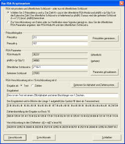
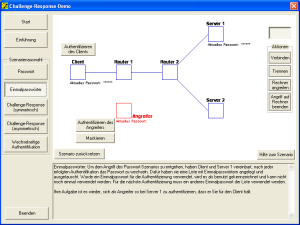
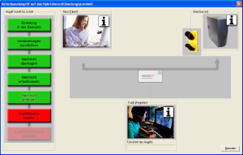
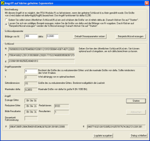

Demonstrations- und Referenzprogramm für Kryptographie und Kryptoanalyse
Was bietet CrypTool?
Interaktive Demonstrationen / Visualisierungen
Online-Hilfe, Dokumentation und Tutorials
Roadmap (Planungen für die nächsten Versionen)
Freigabe des Quellcodes / Lizenzbestimmungen / Haftungsausschluss
Was bietet CrypTool?
CrypTool ist ein Freeware-Programm, mit dem Sie kryptographische Verfahren anwenden und analysieren können. Die Bedienung folgt den typischen Standards von Windowsprogrammen.
Teil von CrypTool ist eine sehr umfangreiche Online-Hilfe, die auch ohne tiefes Kryptowissen verstanden werden kann.
CrypTool ist in Deutsch, Englisch und Polnisch vorhanden,
enthält fast alle State-of-the-art-Kryptofunktionen und ermöglicht unter einer einheitlichen Benutzeroberfläche einen "spielerischen" Einstieg in die Kryptographie.
Es stehen sowohl klassische wie moderne Kryptoverfahren zur Verfügung:
- klassisch: zum Beispiel das Caesar-, das ADFGVX-, das Doppelwürfel- oder das Enigma-Verschlüsselungsverfahren.
- modern: beispielsweise das RSA-Verfahren, das AES-Verfahren, Hybridverschlüsselung und auf Gitterreduktion und Elliptischen Kurven basierende Verfahren.
Eine Übersicht über alle Verschlüsselungsverfahren in CrypTool befindet sich im Programm selbst auf der Online-Hilfeseite zum Menü "Ver-/Entschlüsseln" (weitere Details zur Online-Hilfe siehe unten).
Viele Screenshots befinden sich weiter unten und in der beigelegten CrypTool-Präsentation.
Wird ein Dokument verschlüsselt, so wird das Ergebnis ebenfalls wieder in
ein Fenster geschrieben: Der Titel des Ergebnisfensters enthält den Namen des
Ausgangsdokuments und den benutzten Schlüssel. Der Umgang mit Schlüsseln wird
durch 2 Ikonen erleichtert: Mit der Ikone "Schlüssel anzeigen"  können Sie aus einem Ergebnisfenster
den benutzten Schlüssel in einen internen Speicher kopieren. Beim Verschlüsseln eines weiteren Dokuments ist dann die Ikone "Schlüssel einfügen"
können Sie aus einem Ergebnisfenster
den benutzten Schlüssel in einen internen Speicher kopieren. Beim Verschlüsseln eines weiteren Dokuments ist dann die Ikone "Schlüssel einfügen"  in der Schlüsseleingabemaske aktiv. Nützlich ist dies vor allem bei komplexeren Schlüsseln.
in der Schlüsseleingabemaske aktiv. Nützlich ist dies vor allem bei komplexeren Schlüsseln.
Für die klassischen Verschlüsselungsverfahren stehen automatische Analysen zur Verfügung, mit denen der Schlüssel des verschlüsselten Dokuments ermittelt werden kann (eventuell mit Hilfe weiterer Informationen wie dem unverschlüsselten Dokument, dessen Sprache oder einem Kartendeck). Für weitere Informationen zur automatischen Analyse gehen Sie in CrypTool zur Hilfe für das Menü "Analyse" und wählen dort das zu analysierende Verschlüsselungsverfahren.
Zur Unterstützung der eigenen Analyse von Dokumenten kann CrypTool von einem Dokument das Histogramm anzeigen, die Statistik beliebiger N-Gramme ermitteln und Entropie und Autokorrelation berechnen.
Die Verschlüsselungsfunktionen im Menü "Ver-/Entschlüsseln" sind so implementiert, dass sie möglichst effizient aufgerufen und durchgeführt werden können. Dagegen wurden die Funktionen in dem Menü "Einzelverfahren" eher schrittweise und interaktiv implementiert, so dass die E-Learning-Aspekte in den Vordergrund treten.
Im Menü Einzelverfahren werden verschiedene einzelne Verfahren und Protokolle angeboten. Beispielsweise:
- Hashwerte berechnen und ihre Sensitivität demonstrieren.
- Message Authentication Codes (MACs) erstellen.
- Starke Schlüssel nach dem PKCS#5-Standard aus einem Passwort generieren.
- Dokumente komprimieren und wieder entkomprimieren. Damit können Sie die Auswirkungen der Komprimierung von Dateien im Vorfeld einer Verschlüsselung analysieren.
- Zufallsdaten erzeugen oder analysieren.
- Protokolle zur Authentisierung und Schlüsselvereinbarung (DH) demonstrieren.
- Einzelne Verschlüsselungsverfahren schrittweise vor- und zurück durchlaufen (mit ANIMAL).
- Verbreitete Codierungen wie base64 und uuencode anwenden.
Welche Funktionen in den Menüs ausgewählt werden können, hängt vom Typ des aktiven Dokuments ab. Die Menüs und Untermenüs von CrypTool werden dynamisch aufgebaut, abhängig davon, ob im Hauptfenster eine Datei geladen ist und ob die aktive Datei vom Typ Textdatei oder Binärdatei ist. Sie sehen immer alle Menüpunkte. Auswählbar sind aber nur die Menüpunkte, die zu dem aktuellen Dokumenttyp passen, der Rest ist ausgegraut.
Einen Überblick über alle Menüeinträge innerhalb von CrypTool (den Menübaum) finden Sie in Anhang A des Skripts.
In CrypTool wurden die aktuellen Verfahren gemäß internationalen Standards implementiert.
Die Autoren von CrypTool haben nicht versucht, kryptographische Funktionalität nachzubilden, für die es schon sehr gute freie Programme im Internet gibt: Deshalb sind z.B. Wörterbuch-Angriffe auf Passwortdateien (siehe John-the-Ripper) noch nicht in CrypTool enthalten.
Das RSA-Kryptosystem
Das RSA-Kryptosystem (siehe Menü "Einzelverfahren \ RSA-Kryptosystem \ RSA-Demo") ist in allen Einzelheiten und für verschiedene Codierungen dargestellt. Der RSA-Schlüssel wird ausgehend von den selbst erzeugten Primzahlen generiert. Schlüsselerzeugung sowie die Ver- und Entschlüsselung kann in allen Einzelschritten nachvollzogen werden.
Die Faktorisierung von Zahlen ist auch für die Kryptographie eine wichtige Anwendung. Mit den in CrypTool vorgestellten Faktorisierungsalgorithmen lassen sich einfache RSA-Kryptosysteme leicht knacken. Damit erhalten Sie eine Idee für die Mindestschlüssellänge sicherer Verfahren.
Interaktive Demonstrationen / Visualisierungen
Die interaktiven Demonstrationen (Visualisierungen) verhelfen zu einem tieferen Verständnis über:
- Erzeugung einer elektronischen Signatur (Menü Digitale Signaturen/PKI \ Dokument signieren).
- Hybridverschlüsselung (Menü Ver-/Entschlüsseln \ Hybrid \ RSA-AES-Verschlüsselung).
- Wie wirkt sich eine Textänderung auf den Hashwert aus?
- Sensitivität von Hashverfahren (Menü Einzelverfahren \ Hashverfahren \ Hash-Demo).
- Erzeugung von Hashwert-Kollisionen unter Anwendung des Geburtstagsparadoxons (Menü Analyse \ Hashverfahren \ Angriff auf den Hashwert einer digitalen Signatur).
- Diffie-Hellman-Schlüsselaustauschverfahren (DH) (Menü Einzelverfahren \ Protokolle \ Diffie-Hellman-Demo).
- Seitenkanalangriff (Menü Analyse \ Asymmetrische Verfahren \ Seitenkanalangriff auf Textbook-RSA).
- Authentisierungsprotokolle (Menü Einzelverfahren \ Protokolle \ Authentisierungsverfahren im Netz).
- Shared Secret basierend auf dem Chinesischen Restsatz (Menü Einzelverfahren \ Anwendungen des Chinesischen Restsatzes \ Secret Sharing mittels CRT) und nach Shamir (Menü Einzelverfahren \ Secret-Sharing-Demo nach Shamir).
- Visualisierung von Einzelverfahren (z.B. Vigenère, AES, Enigma) (Menü Einzelverfahren \ Visualisierung von Algorithmen).
- Anwendungen eines uralten Satzes der Zahlentheorie (Chinesischer Restsatz) ausprobieren (z.B. wann stehen die Planeten eines Sonnensystems genau hintereinander) (Menü Einzelverfahren \ Anwendungen des Chinesischen Restsatzes \ Astronomie und Planetenbewegung).
- 3D-Visualisierung von großen Mengen von Zufallszahlen (Menü Analyse \ Zufallsanalyse \ 3D-Visualisierung).
- Zahlentheorie-Lernprogramm (Menü Einzelverfahren \ Zahlentheorie interaktiv \ Lernprogramm für Zahlentheorie).
- Punktaddition auf Elliptischen Kurven (Menü Einzelverfahren \ Zahlentheorie interaktiv \ Punktaddition auf Elliptischen Kurven).
Online-Hilfe, Dokumentation und Tutorials
Bei CrypTool wurde darauf Wert gelegt, dass man sich an jeder Stelle im Programm mit der F1-Taste kontext-sensitive Online-Hilfe holen kann. Zum Einarbeiten können Sie sich z.B. durch die Menüs bewegen und immer dann F1 drücken, wenn Sie einen interessanten Eintrag sehen.
Die umfangreiche Hilfe enthält:
- Erklärungen aller kryptographischen Grundbegriffe.
- Eine kurze Liste mit Literaturhinweisen aus dem Bereich Kryptographie.
- Eine Zeittafel mit einem historischen Überblick.
- Szenarien (Tutorials) für einen schnellen Einstieg.
- Einen gut sortieren Index zu den behandelten Kryptographie-Themen.
Neben der Online-Hilfe enthält das CrypTool-Paket noch folgende eigenständige Dokumente:
- In der Readme-Datei sind alle wichtigen Elemente des CrypTool-Paketes und detailiert die Neuerungen in dieser Version beschrieben. Daneben enthält diese Datei ausführliche Informationen zu Installation und Betrieb und zum Projekt selbst.
- Die CrypTool-Präsentation fasst auf rund 100 Folien das Wichtigste zum CrypTool-Projekt und zu den Features von CrypTool zusammen.
- Im Skript (ca. 200 Seiten, als PDF-Datei mit ausgeliefert) finden Sie weitere, eher mathematisch orientierte Informationen
- zu kryptographischen Verfahren.
- zu Primzahlen.
- zur elementaren Zahlentheorie mit vielen Beispielen.
- zu aktuellen Ergebnissen der kryptoanalytischen Forschung.
- In der Fantasy-Geschichte "Der Dialog der Schwestern" von Dr. Carsten Elsner wird eine Variante des RSA-Kryptosystems benutzt.
- In der Fantasy-Geschichte "Das Chinesische Labyrinth" von Dr. Carsten Elsner muss Marco Polo zahlentheoretische Aufgaben lösen, um Berater des grossen Khan zu werden.
Weiterhin können Sie aus CrypTool heraus ein Authorware-Lernprogramm aufrufen, das die Verfahren der elementaren Zahlentheorie visualisiert.
Screenshots
a) In CrypTool stehen verschiedene Textanalyseverfahren zur Verfügung. Damit können die Schwächen von einfachen Verschlüsselungsverfahren aufgedeckt und diese teilweise auch automatisch gebrochen werden.

b) Die Abläufe bei der digitalen Signatur und der Hybridverschlüsselung (RSA-AES und ECC-AES) können in interaktiven Datenflussdiagrammen nachvollzogen werden.

c) Die Fähigkeiten von CrypTool werden aktiv durch die umfangreiche Hilfe unterstützt.

d) CrypTool bietet die Möglichkeit, moderne Verschlüsselungsverfahren kennenzulernen und zu testen. Für die modernen symmetrischen Verfahren steht die Brute-Force-Analyse zur Verfügung.

e) Mit der Dialogbox "Das RSA-Kryptosystem" können Sie auch Varianten des RSA-Verfahrens durchspielen (unterschiedliche Schlüssellänge, verschiedene Alphabete, verschiedene Blocklänge).

{kind=link}
f) Eine Demo zu Authentisierungsmöglichkeiten im Netz:
- von UID/PW und One-Time-Password
- über (einseitige) Challenge-Response (symmetrisch + asymmetrisch)
- bis zu asymmetrischer gegenseitiger Authentisierung.
- Der Benutzer kann interaktiv steuern, wie der Angreifer vorgeht (Rechner übernehmen, Verbindungen aufbauen oder trennen, lauschen).
- Lerneffekt: Nur die gegenseitige asymmetrische Authentisierung ist sicher gegen Man-in-the-middle-Angriffe.

{kind=link}
g) Eine Demo für einen Seitenkanalangriff gegen ein typisches Hybridverschlüsselungsprotokoll: Bei einer nicht optimalen Implementierung, wie sie in der Realität vorkam, kann der Angreifer den Sessionkey durch Protokoll-gerechte Anfragen an den Server hoch effizient berechnen.

{kind=link}
h) Drei auf Gitterreduktionsverfahren basierende Angriffe gegen das RSA-Verfahren, die darauf beruhen, dass bestimmte Vorbedingungen erfüllt sind:
- ein Teil von einem der beiden Faktoren von N ist bekannt ("Faktorisieren mit teilweise bekanntem p"),
- ein Teil des Klartextes einer abgefangenen verschlüsselten Nachricht ist bekannt und e ist klein ("Angriff auf stereotype Nachrichten"),
- wenn d im Vergleich zu N zu klein gewählt ist, kann man N faktorisieren ("Angriff auf kleine geheime Exponenten").

{kind=link}
i) Implementierung von MAC-Verfahren (Kombination von Hashes und symmetrischen Verfahren zur Authentisierung von Nachrichten). Hashverfahren wurden bisher schon von den in CrypTool implementierten Konzepten PKCS#5 und digitale Signaturen verwendet.
j) Drei auf dem Chinesischen Restsatz beruhende Anwendungen:
- Lösung von Systemen linearer modularer Kongruenzen am Beispiel einer Planetenkonstellation im Sonnensystem.
- Veranschaulichung des Rechnens mit modularen Resten statt mit den eigentlichen Zahlen.
- Veranschaulichen des Shared Secret-Verfahrens (entspricht der Analogie, dass man zum Öffnen eines Tresors z.B. drei beliebige von 5 Schlüsselinhabern braucht).
k) Veranschaulichen von Algorithmen (Caesar, Vigenère, Nihilist und DES) mit Hilfe der Animationssoftware ANIMAL (Java-Applikation, die es erlaubt, die Einzelschritte von Algorithmen oder die Komponenten von Datenstrukturen beliebig genau zu modellieren, diese manuell vor und zurück abzuspielen oder automatisch ablaufen zu lassen). Das Animal-System erlaubt die Erstellung von Animationen mithilfe einer GUI, ein Skriptsprache sowie einer Java-API.
l) Eine 3D-Visualisierung von großen Mengen von Zufallszahlen mit Hilfe der Volume-Rendering-Engine aus OpenQVis.
m) Die Implementierung und Analyse von ADFGVX als Beispiel einer kaskadierenden Chiffre.
n) Die effiziente Analyse der monoalphabetischen Substitution.
o) Der Zahlenhai ist ein Spiel für Schüler, das diesen den Umgang mit Teilern und Primfaktoren näher bringt.
p) Flash-Animationen zu AES und Enigma.
q) Lernprogramm, das die Verfahren der elementaren Zahlentheorie erläutert und visualisiert.
r) Eine ECC-Demo zeigt, wie man in diskreten und in reellen Räumen Punkte auf einer elliptischen Kurve addiert und multipliziert (geschrieben als Java-Applikation).
Neu in dieser Version
Eine detaillierte Liste von neuen Funktionen und Bugfixes finden Sie in der ReadMe-Datei.
Roadmap (Planungen für die nächsten Versionen)
Aktuell ist CrypTool 1.4.10. Diese Version ist in C/C++ für Win32-Umgebungen geschrieben und sie wurde mit der Entwicklungsumgebung Microsoft Visual Studio 2003 compiliert.
Version 1.4.10 enthält auch Funktionen, die eine Java-Applikation aufrufen. Um diese Funktionen zu nutzen, braucht man als Benutzer eine Java-Runtime unter Win32 (mindestens JRE 1.5).
Für Version 1.4.20 sind in Diskussion, geplant und auch schon in Arbeit:
- Verbesserungen beim PQM (Veranschaulichung der Passwortgüte und der Passwortqualität).
- Die Demonstration der Visuellen Kryptographie.
- Die Implementierung einer Massenmustersuche.
- Eine Demonstration zur Funktionsweise des S/MIME-Standards für sichere E-Mail.
- Eine Demonstration zur Interoperabilität von S/MIME und PGP.
- Eine Demonstration von Bleichenbachers Signature Forgery.
Zurzeit gibt es zwei größere Unterprojekte für zukünftige CrypTool-Versionen, und ein kleineres Unterprojekt für eine Portierung nach Linux:
a) Komplett neu designtes CrypTool in C# (CrypTool 2.0):
- Dies ist ein größeres Teilprojekt, das CrypTool nach C# portiert, basierend auf VS2008, .Net, WPF und dem Crypto-Provider BouncyCastle (öffentliche Beta geplant bis Herbst 2008). Es kann mit der kostenlosen Microsoft Entwicklungsumgebung Visual Studio 2008 Express Edition übersetzt werden.
b) Komplett neu designtes CrypTool in Java (JCrypTool):
- Ein größeres Teilprojekt, das CrypTool nach Java portiert, basierend auf Eclipse, RCP, SWT und den Crypto-Providern BouncyCastle und FlexiProvider (öffentliche Beta (= Meilenstein 3) geplant bis Herbst 2008).
c) Für Linux:
- eine Portierung von CrypTool 1.4.x nach Linux mit Qt4 und gcc4.
Organisatorisches
CrypTool wurde gemeinsam von Wirtschaft und Hochschulen entwickelt -- als adäquates didaktisches Medium für eine moderne Lehre und für End-User Awareness-Programme, um die Sensibilität der Mitarbeiter für IT-Sicherheit zu erhöhen und um ein tieferes Verständnis für Computer-Sicherheit zu ermöglichen.
Ein weiteres Anliegen war die Nachvollziehbarkeit der in Organisationen eingesetzten kryptographischen Verfahren. So ist es mit CrypTool als verlässlicher Referenzimplementierung der verschiedenen Verschlüsselungsverfahren möglich, die in anderen Programmen eingesetzte Verschlüsselung zu testen. Man hat also auch ein Werkzeug zur Hand, mit dessen Hilfe überprüft werden kann, ob in einem Programm wirklich die angegebene Verschlüsselung durchgeführt wird.
Für die Hashfunktionen, die symmetrischen und asymmetrischen Verschlüsselungsverfahren und das Schlüsselmanagement greift CrypTool auf das Secude-Toolkit der Secude IT Security GmbH zurück.
In der beigelegten Secude-Bibliothek ist die Unterstützung von Smartcards deaktiviert. Falls Sie eine Lizenz der Secude-Bibliothek besitzen, können Sie mit Hilfe Ihres Ticketfiles Smartcards benutzen.
Für die Demonstration der ECC-AES-Hybridverschlüsselung wird auf die Bibliothek "cv act library" von cryptovision zurückgegriffen.
Zur Demonstration des RSA-Kryptosystems und zur Faktorisierung von Zahlen greift CrypTool auf die Langzahlarithmetik der Bibliothek Miracl von Shamus Software Ltd zu.
Zur Demonstration der Hash-Kollisionen (m.H. des Geburtstagsparadoxons) greift CrypTool auf die OpenSSL-Bibliothek libeay32.dll zurück.
Zur Durchführung der Gitterbasenreduktions-Angriffe gegen RSA wird die Zahlentheorie-Bibliothek NTL von Victor Shoup eingebunden.
Die GMP-Bibliothek wird für Primzahltests benutzt.
Gehostet wird CrypTool zur Zeit auf den Servern des Lehrstuhls "Sicherheit in der Informationstechnik", Fachbereich Informatik unter Leitung von Frau Prof. Dr. Claudia Eckert an der TU Darmstadt.
Maintainer ist die Open-Source-Entwicklergruppe unter Bernhard Esslinger. Der "Maintainer" ist dafür zuständig, die aktive Weiterentwicklung als Freeware und Open Source zu koordinieren und durchzuführen. Jeder Maintainer verpflichtet sich, dafür zu sorgen,
- dass der Quellcode konsistent bleibt.
- dass für andere Entwickler kompetente Ansprechpartner zur Verfügung stehen.
- dass die Stellen mit den Namen der Autoren und Sponsoren der CrypTool-Anwendung in der Programmausführung und in den Quellcodes so wie in dieser Version erhalten bleiben.
- dass auch alle neuen Versionen komplett in Deutsch und Englisch gepflegt werden.
Freigabe des Quellcodes / Lizenzbestimmungen / Haftungsausschluss
Der Quellcode von CrypTool kann im Download-Bereich heruntergeladen werden.
Bitte beachten Sie die Lizenzbestimmungen und die Informationen zum Haftungsausschluss für eventuelle Schäden durch CrypTool (siehe Download-Seite).
PS:
Diese Seite ist zu großen Teilen identisch mit der Startseite der Onlinehilfe zu CrypTool. In der Onlinehilfe sind die verwendeten Begriffe dann zusätzlich mit anderen Seiten der Onlinehilfe verlinkt.
Bernhard Esslinger -- Copyright © 1998 - 2008 Deutsche Bank AG / Contributors